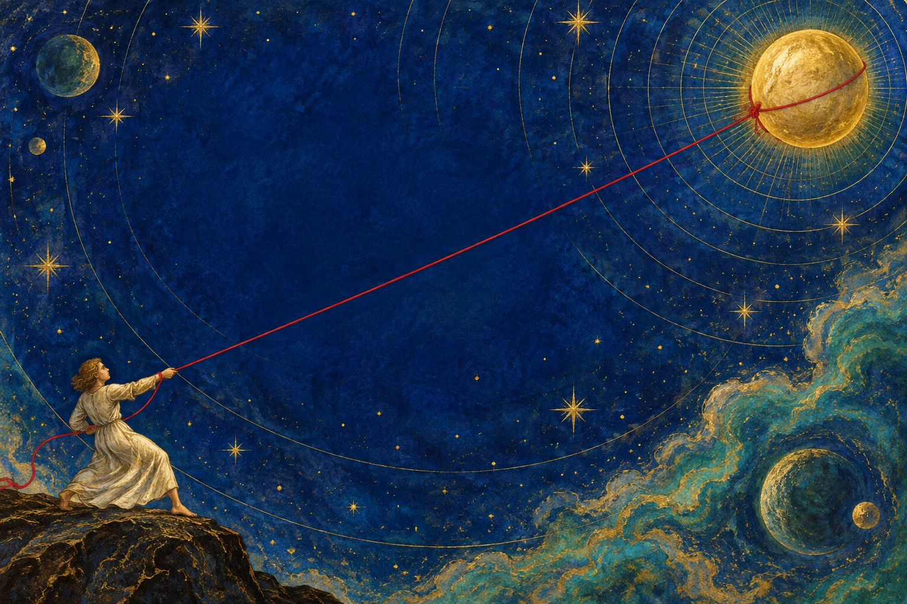
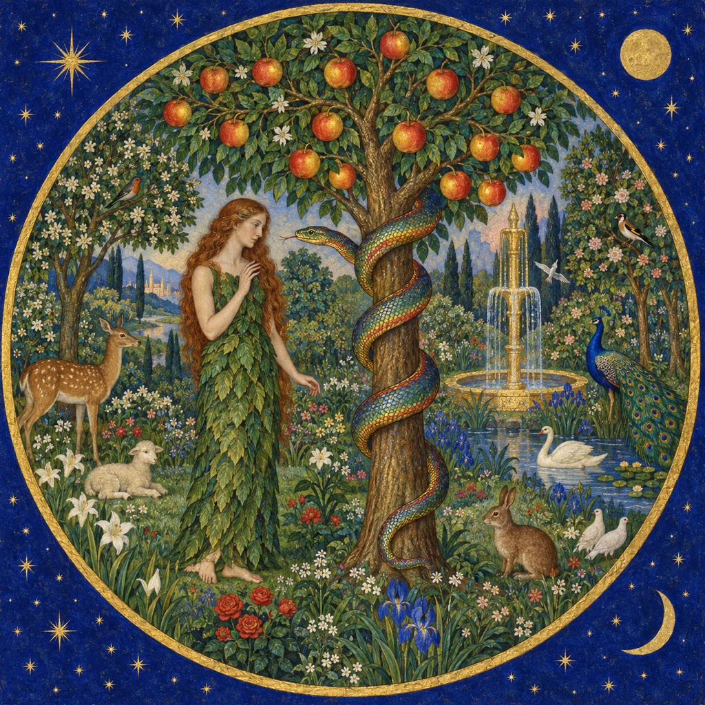
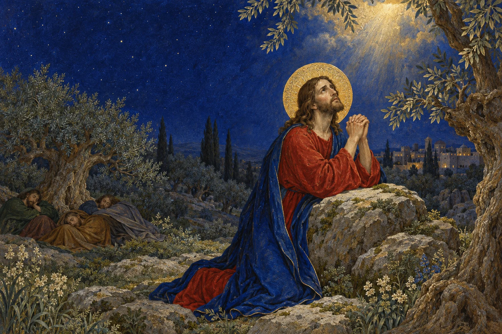
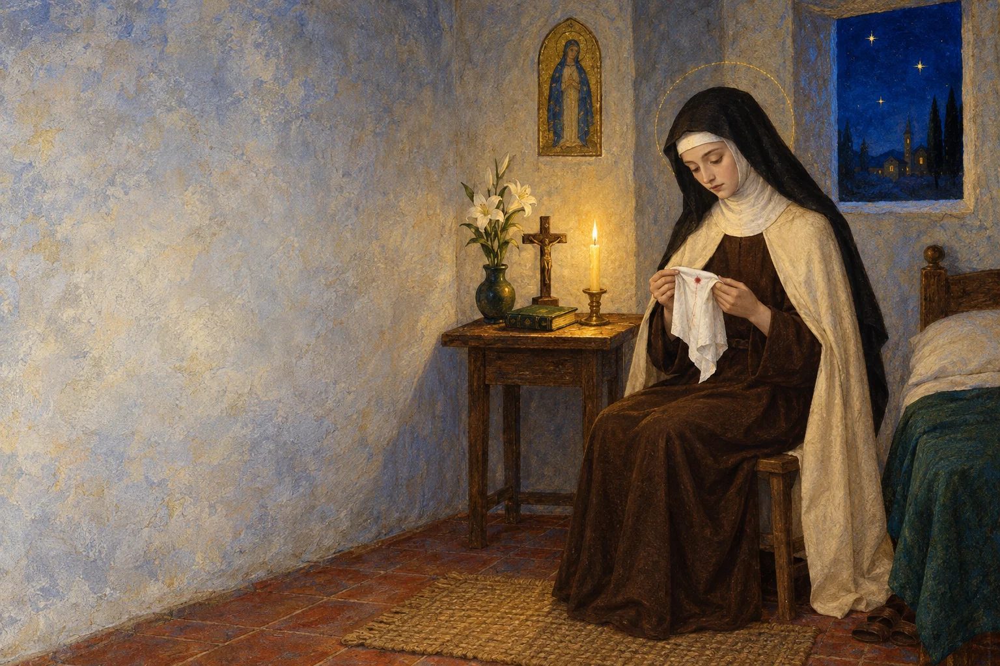
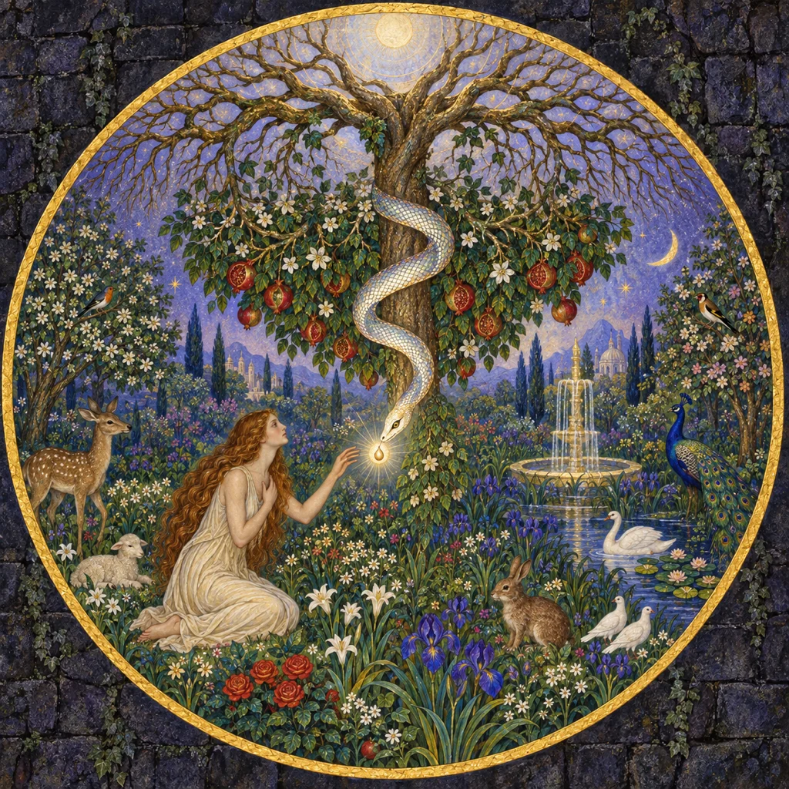
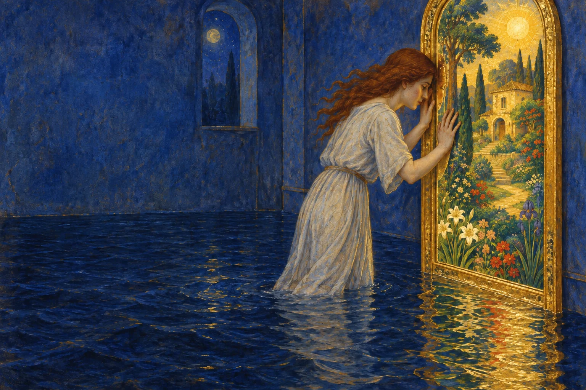
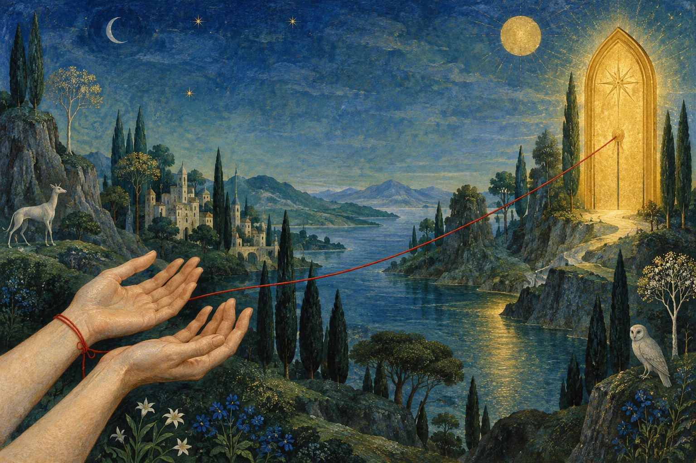
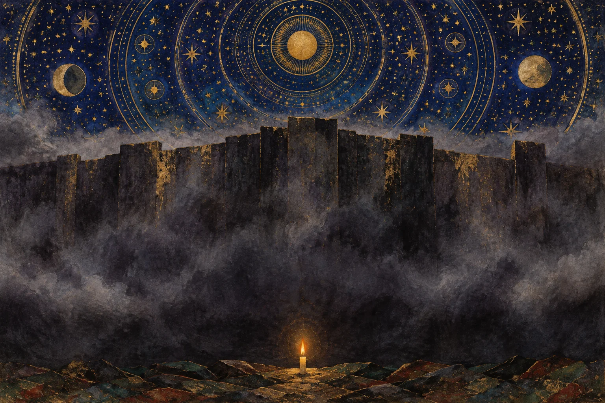
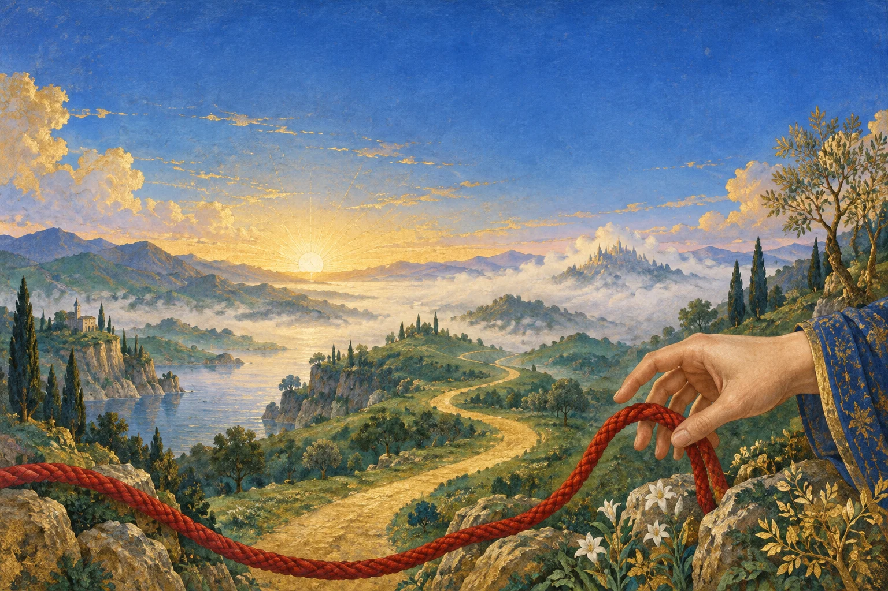

¿Busco a Dios… o una manera espiritual de garantizar lo que deseo?



es profundamente humano.
Buscamos una explicación, una práctica, una promesa que nos quite la incertidumbre.
A veces llamo confianza a un intento más sofisticado de controlar mi vida.
«Si conozco la clave, quizá pueda asegurar mi vida.»
Génesis 3,1–6
«¿Conque Dios os ha dicho que no comáis de ningún árbol del jardín?»
Gn 3,1
No empieza ofreciendo destrucción. Pone en duda la palabra y las intenciones de Dios.
«¿Y si Dios te está ocultando algo bueno?»
Es poderosa cuando el don de Dios…
«El hombre, tentado por el diablo,
dejó morir en su corazón
la confianza hacia su creador.»
«El hombre, tentado por el diablo,
dejó morir en su corazón
la confianza hacia su creador.»
Cuando dejo de confiar en su bondad, busco asegurar mi bien por mi cuenta.
quiso «ser como Dios», pero «sin Dios, antes que Dios y no según Dios»
El deseo de sabiduría no es malo. La ruptura es buscar la plenitud a espaldas de Él.

Algunos relatos antiguos toman el mismo jardín y cambian quién parece digno de confianza.
La serpiente aparece como «la instructora», y afirma que la prohibición fue dada «por celos».
Trad. libre de la versión inglesa de Bentley Layton
Describe grupos para quienes la serpiente ayudó a obtener un conocimiento que el creador inferior ocultaba.
Ireneo escribe como adversario: conviene contrastarlo con el texto gnóstico.
Se conserva la escena; cambia quién parece digno de confianza.
¿Recibo mi vida de Dios… o descubro una clave que Él no me dio?
Raíces esotéricas y gnósticas de la Nueva Era; fundación teosófica en Nueva York, 1875: Jesucristo, portador del agua de la vida (Santa Sede, 2003).
Esto no describe toda meditación ni toda búsqueda de bienestar.
Hablo de propuestas que atribuyen al estado interior el poder de atraer o producir acontecimientos externos.
aplico un procedimiento
para conseguir algo
escucho a Alguien
y le confío lo que pido
¿Estoy escuchando a Alguien… o aplicando una técnica para conseguir algo?

Rhonda Byrne, 2006
Alegoría del atractivo de esa promesa; no es una práctica descrita por el libro.
«Lo que piensas, lo atraes.»
«Tus pensamientos se convierten en cosas.»
Trad. libre. Atraerían objetos, personas y experiencias.
propuesta del autor · no comprobadaVigilar cada temor por miedo a atraerlo.
No es una experiencia atribuible a todos sus lectores.
Los pensamientos atraerían objetos, personas y experiencias.
según su página oficial
Su editorial presenta crear la realidad elegida con lenguaje de física cuántica y neurociencia.
presentación editorial, no demostración científica
La tradición de Conny Méndez une leyes mentales y vocabulario religioso.
Metafísica 4 en 1
¿Qué espero que produzca mi práctica interior?

Joe Dispenza, «The Balance Between Intention and Surrender»: habla de confiar y de no forzar los medios.
«ellos controlan, nosotros soltamos»
«Suelta el cómo. Conserva el resultado imaginado.»
Síntesis de la tensión, no cita de Dispenza
Cuando suelto el método, ¿entrego también el desenlace?
¿Entrego mi futuro… o sólo la manera de conseguirlo?
Puedo soltar los detalles y seguir exigiendo un resultado específico.
«Haré todo correctamente y entonces Dios me dará lo que pido.»
Marcos 14,32–42
«Quedaos aquí y velad» 14,34
«empezó a sentir espanto y angustia» 14,33
«que, si era posible, se alejase de él aquella hora» 14,35
La confianza empieza dentro del miedo, no después de haberlo eliminado.
«¡Abba!, Padre: tú lo puedes todo, aparta de mí este cáliz.»
«Pero no sea como yo quiero, sino como tú quieres.»
Marcos 14,36
La frase decisiva no borra el deseo: lo entrega al Padre.
«¡Levantaos, vamos!» 14,42
Confiar no es inmovilidad ni fingir calma.
«Adán y Eva pensaron que el “no” a Dios sería la cumbre de la libertad»
«Jesús, en el monte de los Olivos, reconduce la voluntad humana al “sí” pleno a Dios.»
Benedicto XVI, Audiencia general, 1 de febrero de 2012
La comodidad no garantiza que yo confíe. La angustia no demuestra que no confío.
Mi estado emocional no es la medida completa de mi relación con Dios.
Teresa del Niño Jesús · Carmelo de Lisieux
Entra al Carmelo con 15 años.
En la noche del Jueves al Viernes Santo aparece sangre: signo de la tuberculosis que terminaría con su vida.
Alegría: pensó que se acercaba el encuentro con Jesús.
Comenzó una gran prueba de la fe.

No sólo perdía la salud. Dejaba de sentir cercano el cielo.
su alma «se viese invadida por las más densas tinieblas»
Manuscrito C, 5vº · citado en C’est la confiance, 25, que la llama «prueba contra la fe»
No decidió abandonar la fe: describió un combate.
No es un día en que la oración no produjo una emoción agradable.
«Cuando canto la felicidad del cielo y la eterna posesión de Dios, no experimento la menor alegría, pues canto simplemente lo que quiero creer.»
Manuscrito C, 7vº · citado en C’est la confiance, 42
una técnica para recuperar el consuelo
permanecer en una ausencia que no controla
Carta 197 · 17 de septiembre de 1896 · a su hermana María paráfrasis
Sus grandes deseos no son el fundamento de su confianza. Recuerda a Jesús pidiendo que se aparte el cáliz: Getsemaní en su propia voz.
«La confianza, y nada más que la confianza, puede conducirnos al Amor.»
Carta 197 · citada en C’est la confiance, 1
La confianza no exige entusiasmo por sufrir.
No recibe la salud como premio por sentir correctamente. Ama y confía con fragilidad, enfermedad y noche interior.

¿Hay algo que le pido y, en el fondo, considero que no debería negarme?
Cuando digo «hágase tu voluntad», ¿confío en su bondad… o espero que esa frase me consiga lo que quiero?
Confiar en Dios no es aprender la fórmula que garantiza un desenlace.
Es pedir con sinceridad, actuar con responsabilidad
y seguir viviendo como hijo cuando el final no está en mis manos.
Señor, enséñame a pedir con verdad
y a confiar sin exigirte el desenlace.
Amén.